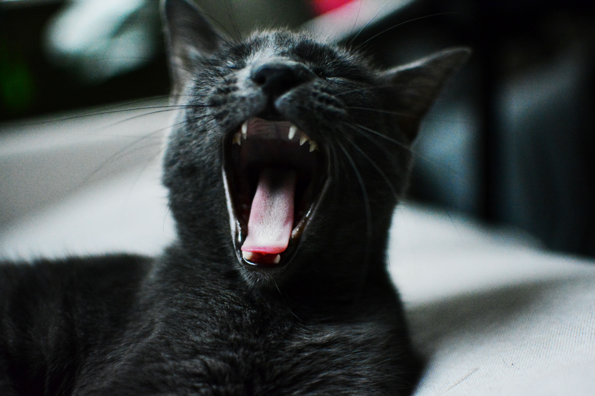
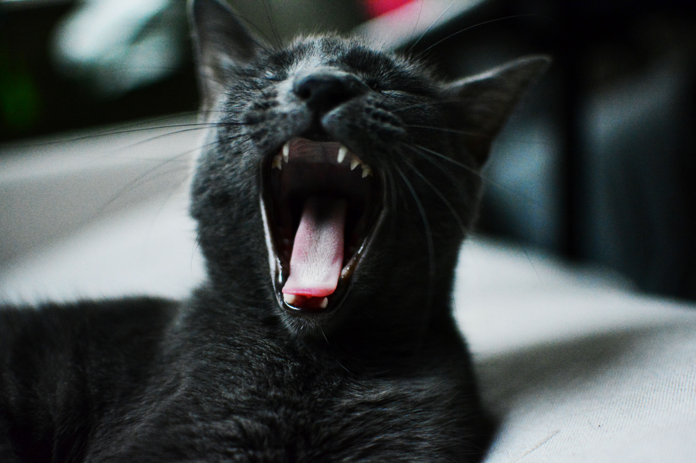

Intro: Let the journey begin
- I started school with a Science major. I completed a four year degree but I was not happy with jobs in my field. This was my opening into the world, but it was merely a stepping stone.
- The next venture I jumped into was Digital Marketing. This is where I learned all about business, risk, and return. I would say that digital marketing was a very thrilling puzzle that had to be adjusted with every industry and business owner.
- Now I am jumping into coding and I will become a producer of apps, software, and beautiful UX/UI design. I know that this is a profession that requires teamwork and strong communication. I will be ready to work on any team and jump into my next project. I am excited to start this journey towards a whole new world!
 
